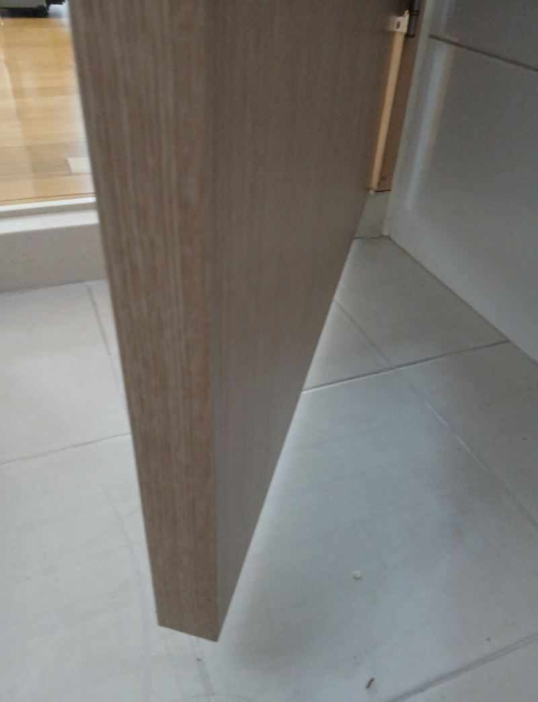
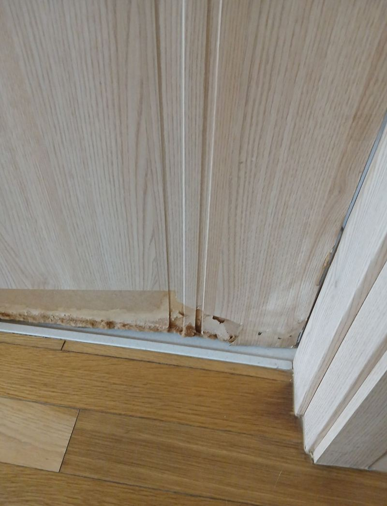
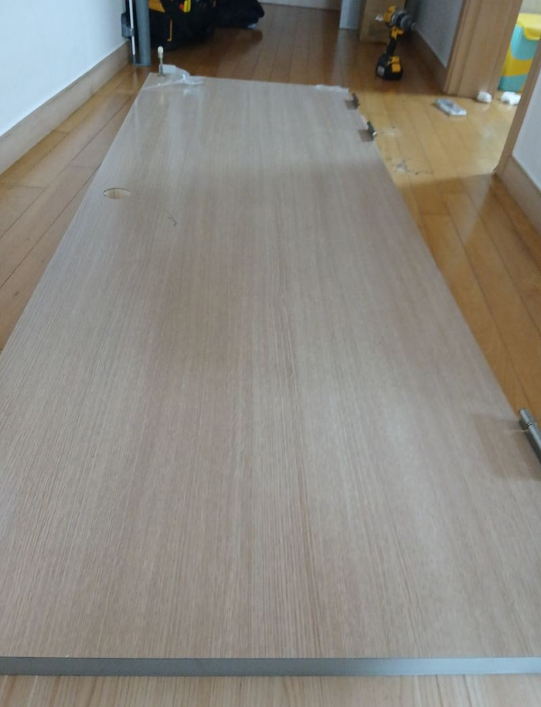
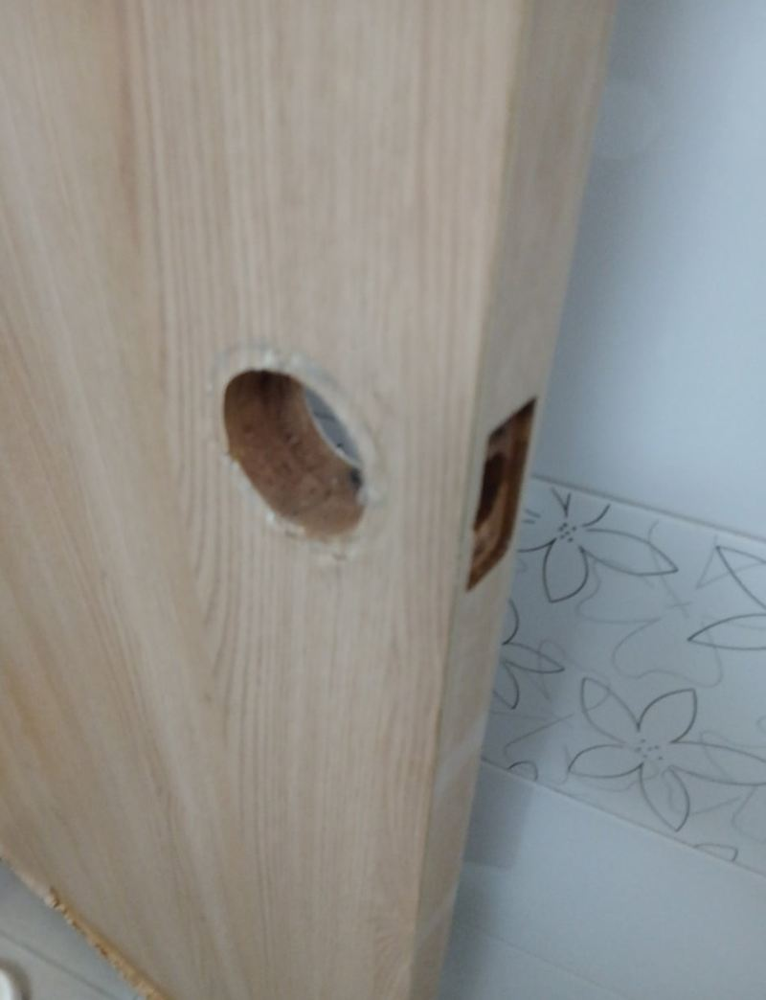
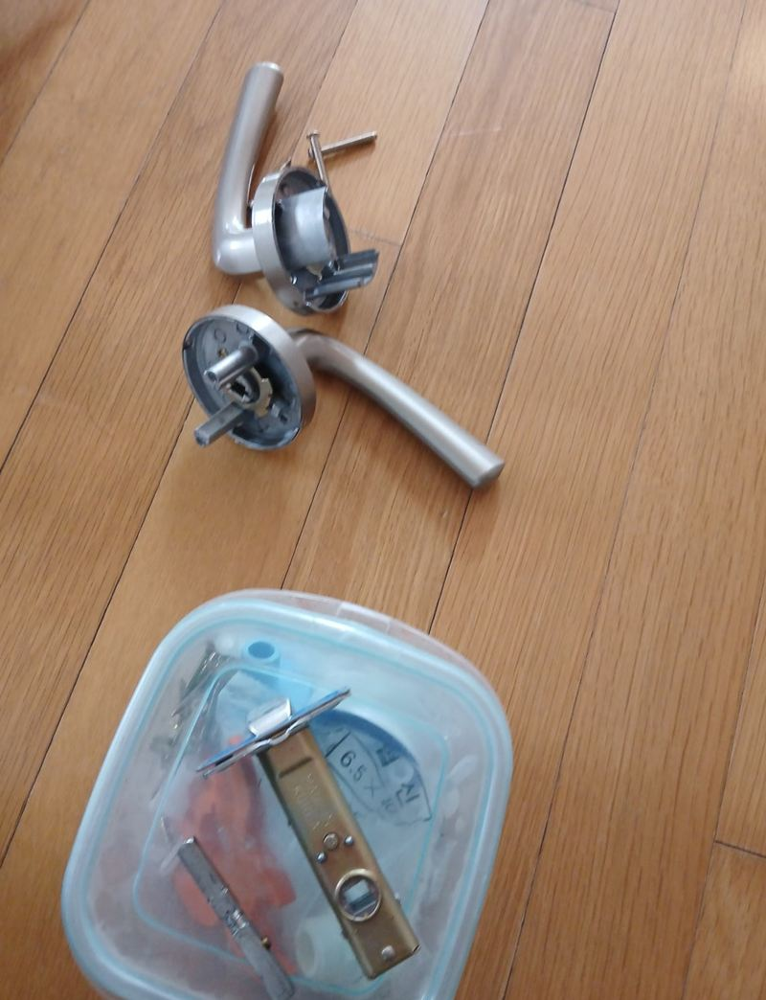
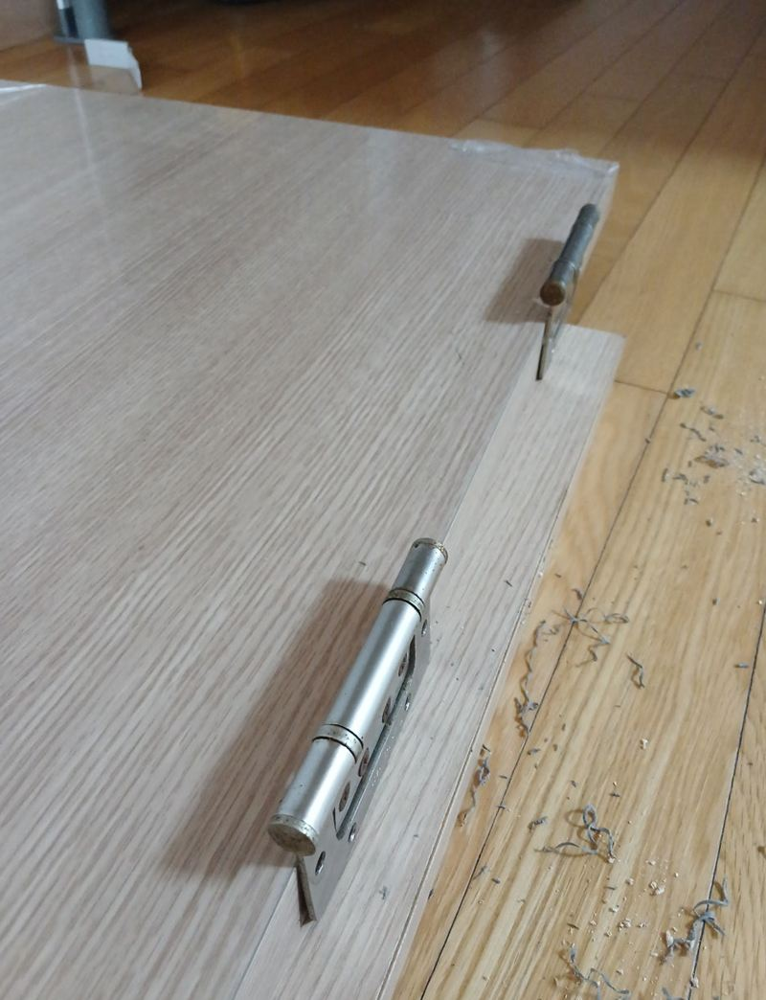

경기광주 부풀어 오른 화장실문 교체 방법
← 밀어서 전후 비교 →
"화장실 문 아래가 물을 먹어서 불어터졌어요. 닫을 때마다 끼여요." 경기광주 초월읍 아파트에 사는 세입자분이 연락하셨고, 비용은 집주인분이 내기로 한 집이었어요. 문 하단 모서리가 부풀어 필름이 터지고 속살이 드러나 있었어요. 문틀은 그대로 두고, 부푼 만큼까지 감안해 실측한 새 문짝을 기존 경첩 자리에 맞춰 달았어요.
| 현장 | 경기광주 초월읍 아파트 화장실 |
|---|---|
| 증상 | 문 하단이 부풀고 필름이 벗겨짐, 닫을 때 끼임 |
| 한 일 | 기존 문 탈착 → 문틀 정리·재실측 → 같은 디자인 문짝 제작 → 기존 경첩 자리에 설치 → 수평·손잡이 확인 → 폐문 수거 |
| 남긴 것 | 문틀, 경첩 자리 |
화장실문이 아래부터 부푸는 이유
샤워할 때 생긴 수증기와 바닥 물기가 문 아래쪽 모서리로 계속 스며들어요. 겉 필름이 한 번 들뜨면 그 틈으로 물이 더 빨리 들어가고, 속에 든 판재가 불어 부풀어요. 이 집 문도 하단이 휘고 경첩 근처까지 상해 있었어요.


| 원인 | 줄이는 방법 |
|---|---|
| 수증기가 문 하단에 반복해서 스밈 | 문 하단 실리콘 보강 |
| 물에 약한 필름 마감 | ABS 도어나 도장 도어로 교체 |
| 환기 부족 | 환풍기 자주 켜고 문 열어 두기 |
| 합판 위주 문짝 | 습기에 강한 재질 선택 |
문짝 교체 순서
기존 문 떼기
경첩 주변이 부식돼 있어 문틀이 다치지 않게 조심히 분리했어요. 문틀에 남은 실리콘과 먼지도 정리했어요.
실측 보정
부푼 문을 그대로 재면 새 문이 커져요. 문틀 안쪽을 다시 재고, 부푼 부분을 빼고 실제 크기로 보정해 같은 디자인으로 만들었어요.


경첩 자리 맞춰 달기
문틀을 상하지 않게 원래 경첩 자리를 그대로 썼어요. 경첩이 조금만 틀어져도 문이 비틀려 닫히지 않아서, 임시로 걸고 수평계로 각도를 본 뒤 완전히 고정했어요.


여닫이 확인과 정리
여러 번 여닫으며 닫히는 힘과 소리를 듣고, 손잡이 움직임과 표면 상태를 본 뒤 떼어 낸 문은 가져가 정리했어요.
다시 부풀지 않게 하려면
같은 자리에 같은 재질 문을 달면 몇 년 뒤 또 같은 일이 생길 수 있어요. 욕실 문이라면 습기에 강한 ABS 도어가 관리하기 편해요. 이번 집은 기존 디자인을 맞추길 원해 같은 모양으로 했고, 대신 하단 마감과 환기 습관을 함께 안내했어요. 교체 후 고객분은 "문이 부드럽게 닫힌다"며 만족하셨어요.
욕실 문 관리 습관
- 샤워 후 환풍기샤워가 끝나고도 잠시 환풍기를 켜 두면 문 아래 수증기가 줄어요.
- 문 하단 실리콘 확인실리콘이 갈라지면 그 틈으로 물이 먼저 들어가요.
- 바닥 물기 닦기문 앞에 고인 물이 문 아래 모서리를 계속 적셔요.
부푼 화장실문 질문
부푼 부분만 깎아서 쓰면 안 되나요?
잠깐은 닫히지만 속까지 젖은 판재는 계속 부풀고 썩어요. 필름이 터졌다면 교체가 나아요.
문틀도 같이 바꿔야 하나요?
문틀이 단단하면 문짝만 바꿔요. 문틀 아래까지 썩었다면 함께 봐요.
세입자인데 직접 불러도 되나요?
이 현장처럼 세입자분이 연락하고 집주인분이 비용을 내는 경우도 많아요. 미리 집주인과 이야기해 두세요.
손잡이도 새로 바꾸나요?
기존 손잡이를 다시 쓰거나 새로 달 수 있어요. 원하시는 쪽을 말씀해 주세요.
방문도 같은 방식인가요?
네, 방문도 문틀을 살리고 문짝만 바꾸는 방식이 같아요.
디자인을 바꿔도 되나요?
다른 집 문과 어울리는지 보고 고르면 돼요. 샘플로 비교해요.
문 하단만 막아 주는 방법도 있나요?
아직 부풀기 전이라면 하단 실리콘 보강으로 물이 덜 스미게 할 수 있어요.
화장실 문짝을 ABS로 바꾸면 무거운가요?
일반 문과 크게 다르지 않아 기존 경첩으로 다는 경우가 많아요.
다른 방문·욕실문 현장
문 전체와 부푼 아래쪽을 가까이 찍어 보내 주세요.
전화 상담 010-4517-9872